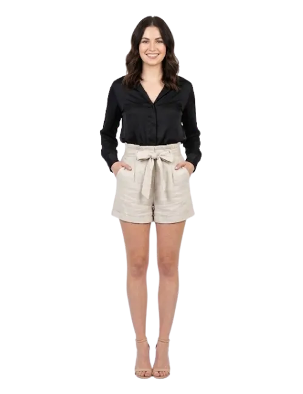

Custom Private Label & Bulk Supply Solutions for Global Fashion Brands
Tech packs specify waist, inseam, paperbag pleat depth, belt loop placement, pocket style, and shrink allowances. Fit'samples in 10-12 days.
Fabric: 55% linen / 45% cotton (150 GSM) for natural texture and breathability.
Paperbag Waist: Gathered fabric at waist creating paperbag silhouette; reinforced pleat stitching; belt loops for tie closure.
Fit: High-waist with gathered paper-bag detail; relaxed through hip and thigh; short length.
Construction: Button/zip fly closure; front and back pockets; topstitched.
Finishing: Shrink control wash; careful press maintaining pleat shape; QC for measurements and pleat consistency.
Compliant linen-cotton mills; buttons; labels within RSL.
Standard MOQ: 250 pcs per color.
Approx. FOB: $3.85 - $4.90 including linen-cotton, paperbag pleating, button hardware, QC, and packing.
Bulk: 21-25 days after approvals.
Bagged with barcode/ASIN, hang tags, size stickers. Fold protects pleat structure; optional tissue.